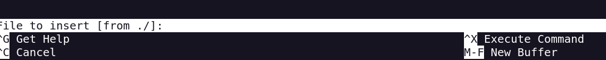

OpenAdmin
Portscan
Directory enumeration
gobuster --wordlist=/usr/share/wordlists/dirbuster/directory-list-2.3-medium.txt dir -u http://10.10.10.171/
On /music there is a redirection to /ona/ directory
I have a version of OpenNetAdmin 18.1.1
With searchsploit i find that this version its vulnerable to RCE
I enter with www-data user
I will try to upgrade the shell for have
There is 2 users
I find the settings to the db
Using Password reuse i can enter with user jimmy throught SSH
Interesting active port
Lets go make a portforwarding of the port
On /var/www/internal i found a post request
This contains the username jimmy and a hash sha512
We login on with this cracked passwd and the username jimmy
And we obtain a Private Key (So probably to joanna)
For ssh connection i have to send the password too, so i will crack the ssh key with ssh2john
This password is the passsphrase for the private key

With sudo -l i see that i can execute a command as a root
With nano as root we can read files and execute commands too

So i can read the root.txt flag